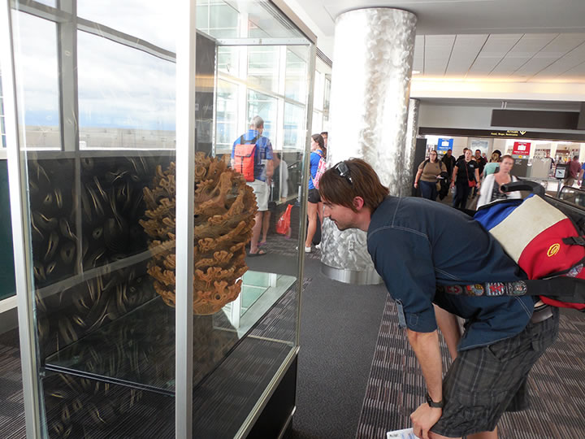

― お知らせ･活動予定 ―
-
■ARTs of JOMON in DENVER
【期 間】２０１５年９月１日～１１月３０日
【会 場】アメリカ コロラド州 デンバー国際空港 -
■第２１回 秋の縄文野焼き祭り（平成２７年度）
【開催日】２０１５年１０月１１日（日） -
■鎮魂と復興を祈念して「縄文いのりの土偶」をつくろう
―東日本大震災への祈り―
|  |
【出展作家（50音順）】
猪風来 Ifurai（縄文造形家）
大森準平 Junpei Omori（陶芸家）
大藪 龍二郎 Ryujiro Oyabu（陶芸家）
大山康太郎 Kotaro Ooyama a.k.a.Mon（ライブペインター／DJ）
金理有 Riyoo Kim（陶芸家）
坂巻善徳 a.k.a.sense（美術家）
小林武人 Taketo Kobayashi（3DGGデザイナー）
澁谷忠臣 Tadaomi Shibuya（グラフィックアーティスト）
篠崎裕美子 Yumiko Shinozaki（陶芸家）
竹谷隆之 Takayuki Takeya（フィギュア造形師）
堀江武史 Takeshi Horie（修復家）
片桐仁 Jin Katagiri（俳優、タレント）
丸岡和吾 Kazumichi Maruoka（髑髏作家）
村上原野 Genya Murakami（縄文造形家）
結城幸司 Koji Yuki（版画家・彫刻家）
ARTs of JOMON in 新見に引き続いて、アメリカでの現代縄文アート展の開催。
日本から15名のアーティストによる縄文造形作品などを展示しています。
→【アメリカでの縄文アート展開（ARTs of JOMON in DENVER に先駆けて）】

|

|

|

|

|

|

|
|

|

|

|

|
| 【第２１回「秋の縄文野焼き祭り」チラシ】 →PDF版を開く |
● 縄文野焼き祭りとは？
開館以来10年間、縄文スピリットにもとづく陶芸教室と縄文野焼き祭りを館の主要な活動として行ってきました。
なぜ今、縄文野焼きなのか――窯を使わずに天と地、太陽と風と火の力によって焼き上げる縄文野焼きは、
自然と共生し、生と死と再生への畏怖と祈りを抱く縄文の世界観を体感することができます。
陶芸教室生や子供たち、法曽焼同好会員などによる作品約150点をスタッフ・協力者たち皆で焼き上げます。
～生命と魂の根源力～
縄文スピリットから始まる創造の新時代
縄文の自然観・宇宙観に学び表現を発展させる、多彩なジャンルでの現代縄文アートの潮流がいま国内外で
注目されています。
今年６月には開館10周年記念企画として現代縄文アート展『ARTs of JOMON in 新見』を開催。
全国の縄文アーティスト26人の作品が一堂に会しました。
=∴=∵=∴=∵=∴=∵=∴=∵=∴=∵=∴=∵=∴=∵=∴=∵=∴=∵=∴=∵=∴=∵=∴=∵=∴=∵=∴=
《縄文の炎 コラボ・パフォーマンス》
□ 午前11時～ おやじバンド V-STAFF 演奏
□ 午後 1 時～ みんなで縄文太鼓を打ち鳴らそう！
（フリーマイク・フリーステージ）
土器は縄文スピリットの器、そして母なる大地の化身
心を込めた土器・土偶を焼く縄文の炎が燃えさかる時、魂が震え足は大地を踏み鳴らし体が自然と揺すぶ
られます。
縄文太鼓を打ち鳴らし笛や踊りが始まると、そこは縄文夢空間！
=∴=∵=∴=∵=∴=∵=∴=∵=∴=∵=∴=∵=∴=∵=∴=∵=∴=∵=∴=∵=∴=∵=∴=∵=∴=∵=∴=
《縄文野焼き大賞》
この日焼き上がった作品の中から、特に縄文造形の素晴らしさや独創性に優れたものを選び「縄文野焼き大賞」
をはじめ各賞を選考・表彰いたします。
受賞作品は後日、猪風来美術館に展示いたします。
=∴=∵=∴=∵=∴=∵=∴=∵=∴=∵=∴=∵=∴=∵=∴=∵=∴=∵=∴=∵=∴=∵=∴=∵=∴=∵=∴=
《縄文体験コーナー》
● 縄文土器で煮炊きをしよう！
縄文時代には、炉にすえた土器で温かい汁物を作り味わっていました。
みんなで土器のまわりに薪をくべ、野菜や山のキノコたっぶりの美味しい汁を作って食べよう！
□ （お昼頃～／無料）
● 粘土でつくろう！
縄文粘土で小さな土器や土偶・オブジェなどを作ってみよう。
縄目文様を入れると縄文の魂が宿ります！
□ （随時／300円）
● 石でまが玉をつくろう！
まが玉は生命の根源のかたち。
しあわせを祈り魔を祓う力が宿っています。
□ （随時／黒・ピンク・白各500円）
=∴=∵=∴=∵=∴=∵=∴=∵=∴=∵=∴=∵=∴=∵=∴=∵=∴=∵=∴=∵=∴=∵=∴=∵=∴=∵=∴=
《販売コーナー》
地元の法曽焼同好会が、昼食や飲み物のほか、法曽焼茶碗や法曽茶などを販売いたします。
どうぞご利用ください。
=∴=∵=∴=∵=∴=∵=∴=∵=∴=∵=∴=∵=∴=∵=∴=∵=∴=∵=∴=∵=∴=∵=∴=∵=∴=∵=∴=
● 館内案内
館内では常設展のほか、現在〈企画展〉猪風来の縄文夢宇宙『花と精霊』展を開催しております。
この機会にぜひご観覧ください。（観覧料が必要です）
=∴=∵=∴=∵=∴=∵=∴=∵=∴=∵=∴=∵=∴=∵=∴=∵=∴=∵=∴=∵=∴=∵=∴=∵=∴=∵=∴=
■日時 2015年10月11日 日 AM9時～PM4時 ※雨天時12日
■会場 猪風来美術館前広場 入場無料(館内は観覧料が必要です)
■主催 新見市教育委員会・猪風来美術館(新見市法曽陶芸館)・法曽焼同好会
■お問い合わせ先 猪風来美術館 TEL･FAX 0867-75-2444
〒719-2552 岡山県新見市法曽609

|
このたびの東日本大震災による被災に対しまして、心からのお見舞いと哀悼の意を表します。
被害地の惨状と深い悲しみの中で、再起を期して心を奮い立たせている被災者の皆様への応援の気持ちをこめて
「縄文いのりの土偶」をつくりませんか？
古来より縄文の土偶は、豊饒を願い災難をはらい、鎮魂と再生を祈願してつくられたものです。
猪風来美術館では開館以来、「にぎり地蔵」として願い思いをこめた小さな土偶を、陶芸体験の皆さんに
つくっていただいてきました。
野焼きしたお地蔵さまは、一部美術館と済渡寺をつなぐ参道の祠におかれ、「野辺の地蔵さまロード」として
みんなの思いをつなぐスポットになっています。
２０１０年４月１６日に開催された「春の縄文野焼き祭り」の縄文体験コーナー「にぎり地蔵をつくろう」では
『震災地への思いや気持ちをこめて「縄文いのりの土偶」をつくり、被災された方々へ思いをつなげよう』
との趣旨で呼びかけをさせていただきました。
その際、みなさまに多くのご理解とご賛同をいただきました。
復興はおそらく、これから長くかかることでしょう。
そのため「縄文いのりの土偶」づくりの活動もまた、継続していきたいと思っております。
どうぞ御協力よろしくお願いいたします。
※ 参加費300円は全額、復興義援金として寄付させていただきます。
※ 制作された「縄文いのりの土偶」のご寄付をお願いします。
※ 後日縄文野焼きされた「縄文いのりの土偶」の安置場所は検討させていただきます。